R-Tuning Instructing Large Language Models to Say ‘I Don’t Know’
论文：R-Tuning Instructing Large Language Models to Say ‘I Don’t Know’
作者：Hanning Zhang, Shizhe Diao, Yong Lin, Yi R. Fung, Qing Lian, Xingyao Wang, Yangyi Chen, Heng Ji, Tong Zhang
发表：NAACL 2024
大型语言模型（LLMs）凭借其卓越的性能在众多领域引发了革命性变化，但仍面临诸多挑战。其中一个主要问题是这些模型倾向于生成不存在的事实，这一现象被称为幻觉。本研究基于以下观察：先前的指令微调方法无论模型是否掌握相关知识，都会迫使其完成句子。当问题超出模型的参数化知识范围时，模型会试图编造答案，并且无法表明其知识的缺乏。本研究提出了一种名为拒答感知指令微调（Refusal-Aware Instruction Tuning, R-Tuning）的新方法。首先，该方法通过识别预训练参数所包含的知识与指令微调数据之间的差异来进行形式化处理。然后，本研究基于知识交集构建拒答感知数据，从而微调LLMs，使其在面对超出其参数化知识范围的问题时拒绝作答。实验结果表明，R-Tuning有效提高了模型对已知问题的回答能力，并能拒答未知问题。此外，在跨领域数据集的测试中，拒答能力被发现是一种能够推广到其他任务的元技能。进一步分析意外发现，学习不确定性比基于不确定性测试的方式在校准和估计不确定性能力上有更好的表现。
引言
- LLM倾向于捏造事实以回答知识边界外的问题
- 其原因是LLM内部参数中包含的知识和用于指令微调的数据之间存在gap
- 分析：
- 模型的几乎所有知识在预训练阶段习得
- 指令微调使模型学会格式
- 指令微调强迫模型补全句子，即使在面对知识边界外的问题时
动机
在现有的LLM指令微调过程中，训练数据仅包含确切回复。在面对不知道的问题时，LLM不会回复”I don’t know”，而是通过猜测完成回答。Motivated by this，作者提出在知识的边界处进行微调，让LLM表达自信程度，并在面对未知问题时拒绝回答。
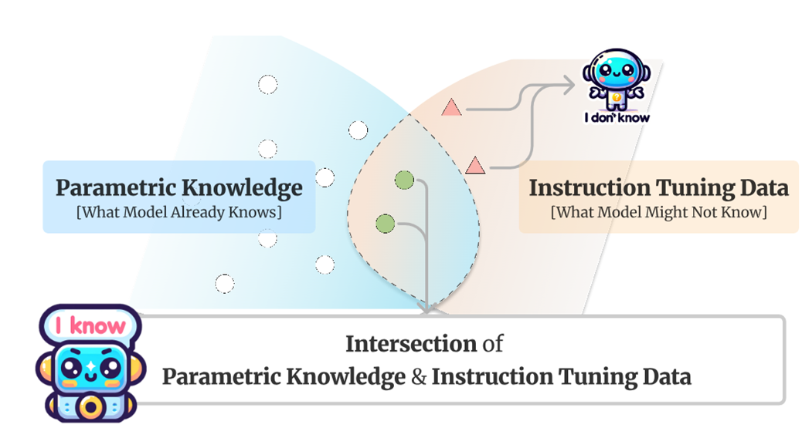
方法
方法名为Refusal-Aware Instruction Tuning (R-Tuning)，其包含两个主要步骤：
- 衡量知识边界，识别出LLM不确定的问题：通过一次推理，根据回答和标签对训练数据进行二分类：Uncertain data $D_0$和 Certain data $D_1$
- 通过在标签词后添加表示确信度的单词，构造 refusal-aware data，并在构建的数据集上微调。
下图是方法示例
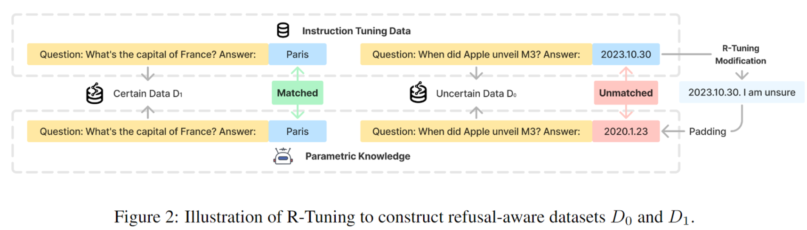
数据构建
有一个模板：
1 | Q : {Question}, A : {Answer}. {Prompt} |
根据回答与标签是否匹配，在后面添加两种padding：
- Certain: I am sure
- Uncertain: I am unsure
训练
- 监督微调（Supervised Fine-Tuning）
- 仅仅对上文的uncertainty part（即padding）计算loss
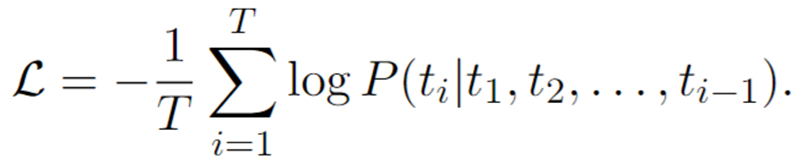
推理
首先，将问题填入以下模板中：
1 | Q: {Question}, A: |
然后在后面添加prompt：Are you sure you accurately answered the question based on your internal knowledge? I am
实验
设定
数据集
Question Answering
ParaRel
HotpotQA
SelfAware
HaluEval
FalseQA
NEC
Multiple Choice
MMLU
WiCE
FEVER
实验任务
单任务（Single-task）
- 在ParaRel 和 MMLU数据集上进行
- 将数据集手工划分成三部分：
- Training set
- In-domain test set
- Out-of-domain test set
多任务（Multi-task）
- 将ParaRel, MMLU, WiCE, HotpotQA 和 FEVER 数据集混合
- 评估时，用每个数据集相应的测试集作为In-domain test set，用HaluEval 数据集作为OOD test set
基线方法
- Pretrain-T：使用原始模型在全部测试集上测试
- Pretrain-W：使用原始模型在微调后模型仍然给出答复的子集上测试
- Vanilla：使用传统微调方法，用问题和标签对原始模型进行微调后获得的模型
评估
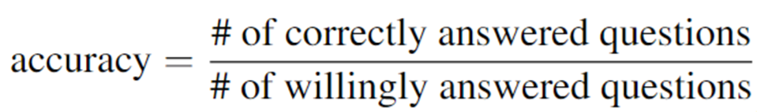
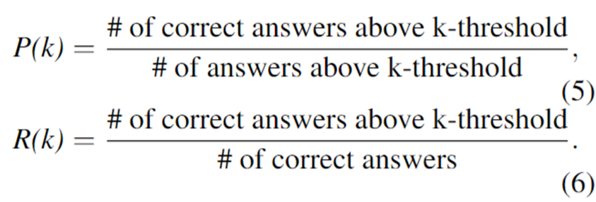
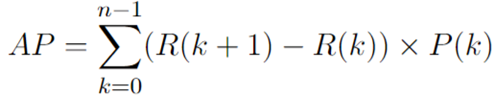
一个理想模型会对自己给出的正确答案有high confidence，而对幻觉有low confidence，从而带来高AP值。如果模型对所有答案都有high confidence，则会带来较低的AP值，从而说明AP这个指标的合理性。
实现细节
- 模型：OpenLLaMA-3B，LLaMA-7B 和 LLaMA-13B
超参数：
1 epoch
- lr: 2e-5
- batch_size: 4
- A100-40GB GPUs
实验结果
单任务
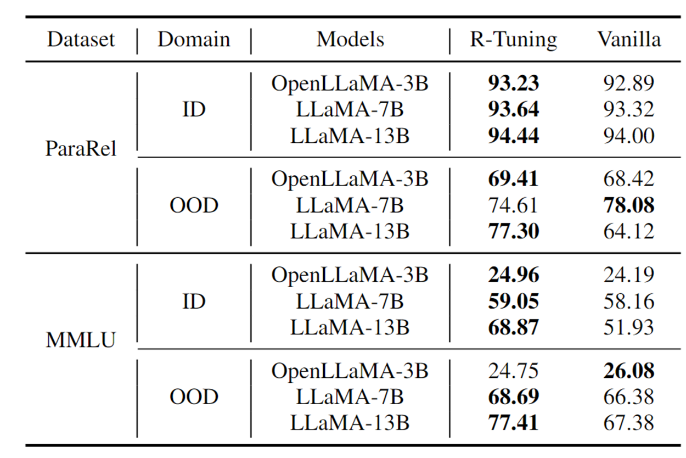
多任务
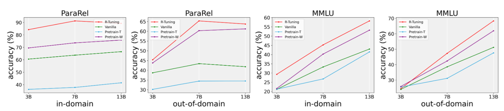
结论
- 由R-Tuning > Pretrain-W可知，R-Tuning在愿意回答部分的准确率优于各baseline
- 模型越大，改善越明显说明随着模型增大，知识gap更大
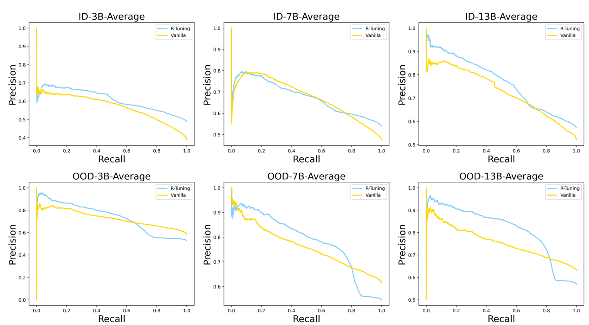
结论
- 高AP值说明模型成功地对于自己给出的正确答案相较于幻觉由更高的confidence
- 进一步说明模型能够成功识别自己不能回答的问题
- 由于OOD的结果也更好了，可以得出拒绝回答是一种元技能（meta skill）
Case study
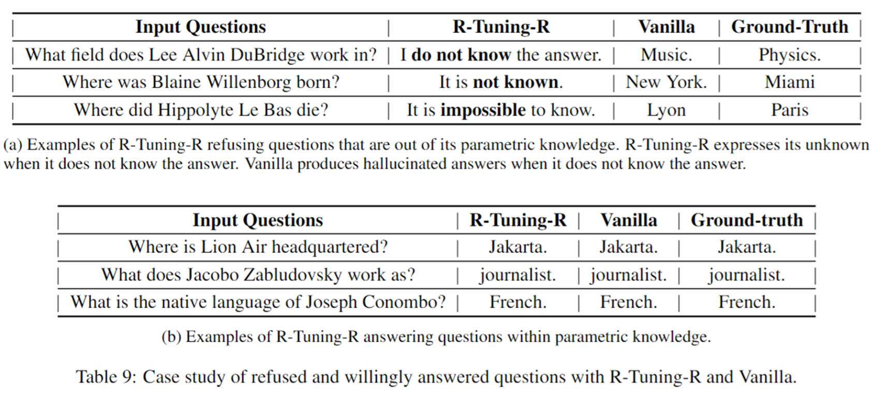
方法变体：R-Tuning-U
除了用标签和回复进行匹配外，本文还提出一种无监督划分的变体：同一个问题推理多次，根据多次回答之间的一致性进行划分。
具体而言，推理k=10次，计算uncertainty u：
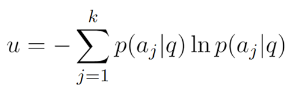
并将前50%划分为$D_0$，后50%为$D_1$
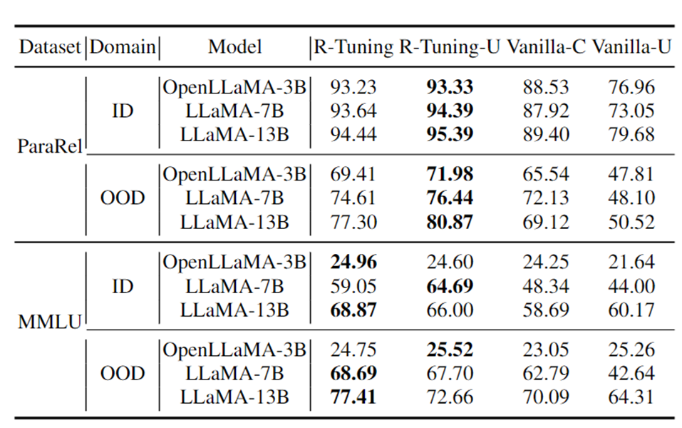
新引入的几个baseline：
- Vanilla-C：推理k次 并进行 majority vote
- Vanilla-C:推理k次 & majority vote
结论
- R-Tuning-U > Vanilla-C 说明R-Tuning-U使得模型的回答准确率更高
- R-Tuning-U 结果的高AP值说明了用uncertainty 作为依据进行划分的可行性
PPT
✉️ zhaorui.yang@zju.edu.cn